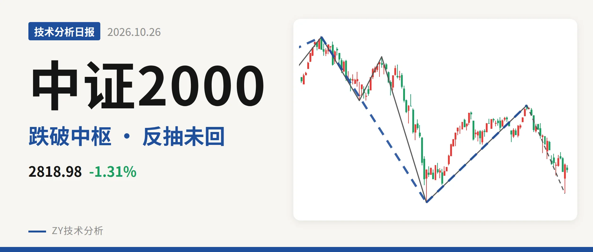
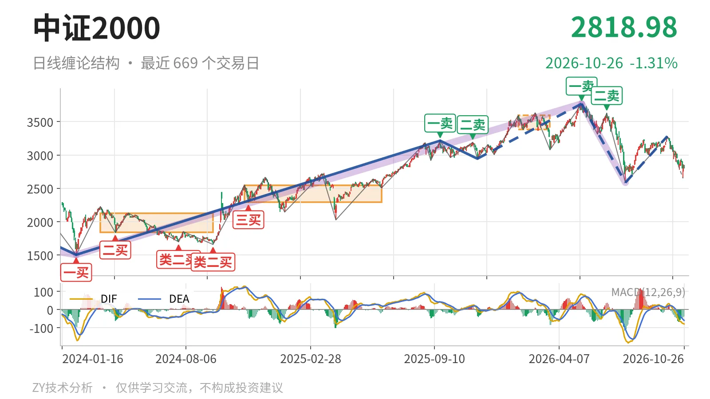
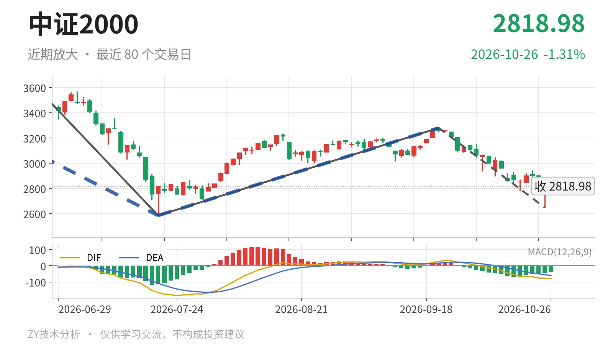

中证2000｜反抽未回3381 下跌段延续

最近日线中枢 3381.36—3593.19点，收盘位于中枢之下
一句话：中证2000跌破最近中枢后反抽未回，日线下跌段延续，结构偏弱。
📉 走势结构：5月14日以来的下跌段仍没有结束
5月14日以来的日线下跌段还在延续，没有被反向线段破坏。更大级别里，2024年2月6日至2026年5月14日上涨走势虽未结束，但5月14日至7月21日下跌走势也没有走完；7月21日至9月22日的反弹只有一笔，不构成日线线段，只能看作下跌段中的反抽。9月22日至10月23日下跌笔低点2649.26点，高于2585.35点，仍在该下跌段内部。最新日线DIF -79.6，在零轴之下，空头结构未改。

🧭 中枢与位置：位于最近中枢下沿下方，反抽未回
最新收盘2818.98点位于最近日线笔中枢下沿3381.36点下方约16.6%，属于中枢下方运行。最近中枢是1月26日至3月23日中枢（3381.36—3593.19点），中轴3487.28点。从全程笔中枢中轴看，2024年11月为2421点，1月为3487点，中枢先上移；但价格已跌破3487点中枢下沿，说明这次上移后没有站稳。当前价格仍高于2024年11月至2025年6月中枢上沿2547.90点，没有回到更早平台，因此是高位中枢被跌破后的回落。
🛎️ 买卖点：卖点一个比一个低，线段级类二买只对应一笔
日线笔级别最近卖点是5月14日一卖3768.08点、6月23日二卖3626.48点，一个比一个低，之后反抽高点未再抬高，仍对应日线线段级别卖点。线段级别7月21日类二买2585.35点出现后，只有7月21日至9月22日一笔反弹，没能形成反向线段，因此该买点目前只对应一笔反抽。9月22日以来的下跌笔低点2649.26点未破2585.35点，类二买暂未被破坏；若后续下破2585点，该线段级买点被破坏。

⚖️ 背驰：9月22日以来下跌笔力度较前一笔收敛
当前最值得比较的是9月22日至10月23日下跌笔与6月23日至7月21日下跌笔。前者绿柱面积618，DIF低点-76.5；后者绿柱面积810，DIF低点-164.2。价格未创2585.35点新低，绿柱面积缩小、DIF低点抬高，属于未创新低且力度收敛。该下跌笔还在延续，10月26日反抽最高2853.30点，尚未成笔结束；若后续继续下探并放大绿柱面积，收敛结构可被破坏。当前DIF仍在零轴下，背驰只能按仍在延续的下跌笔来观察。
🔍 关键位置观察：3381点与2585点决定结构性质
上方最近中枢下沿3381点，下方2585点，是当前结构的关键观察位。反抽若回不到3381点上方，结构上构成三卖；重新站上3381点，则更可能只是中枢扩展。下方2585点一线若被有效跌破且绿柱面积重新放大，5月14日以来的下跌段继续延伸；若在2585点上方止跌，7月21日类二买仍有支撑意义。9月22日反弹起点3280.29点也是一道反抽压力，若不能站上，只能算弱势反抽。最新收盘位于关键位之间，日线DIF零轴下，结构偏弱，但下跌力度收敛，未形成单边下杀。
⚠️ 本文为基于公开行情数据的缠论技术结构记录，由程序自动计算并生成，仅供学习交流，不构成任何投资建议。市场有风险，投资需谨慎。